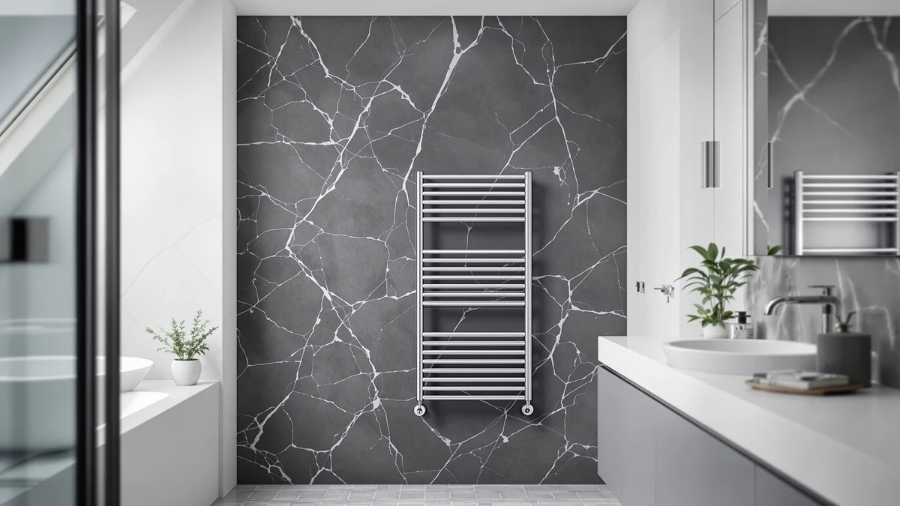

Aquatrend Towel Warmers for Review (2026): Worth It?
Prices and picks verified as of October 2026. Independent, reader-supported reviews.


Quick Answer
The Aquatrend Towel Warmers for Bathroom comes out ahead in this aquatrend towel warmers for review comparison because its stainless steel, freestanding build gives you placement flexibility that the wall-mounted R FLORY and HEATGENE racks and the rotating ENZE model do not offer. At $179.99 it costs more than the R FLORY and HEATGENE racks but less than the ENZE, which makes it the pick for anyone who wants to move a warmer between bathrooms without drilling into a wall.
Our pick: Aquatrend Towel Warmers for Bathroom, $179.99 Check Price on Amazon
Bottom line: our top pick is the Aquatrend Towel Warmers for Bathroom at $179.99.
Things to Know Before You Buy
- Mounting style matters: the Aquatrend in this aquatrend towel warmers for review comparison is freestanding, while the R FLORY and HEATGENE alternatives are wall-mounted racks, so your bathroom layout should drive the choice.
- Material affects longevity: the Aquatrend's stainless steel build resists the rust and pitting that coated-metal racks develop in a humid bathroom over a few years of daily use.
- Price spans a $19 range: the four towel warmers compared here run from $170.99 to $189.99, so brand and feature set matter more than a wide price gap.
- Rotating designs exist: the ENZE alternative adds a rotating bar, and some owners of similar units say the motion helps towels dry more evenly on both sides.
- Wattage and heat-up time vary by listing: none of the four products in this review publish a wattage figure, so check the current Amazon listing if energy use factors into your decision.
If you are researching aquatrend towel warmers for review coverage before you buy, the short version is that the stainless steel, freestanding Aquatrend Towel Warmers for Bathroom holds up well against three similarly priced alternatives from R FLORY, HEATGENE, and ENZE. Cold towels after a shower are a small, recurring annoyance, and a heated towel warmer solves it, but only if you pick a model that fits your bathroom's layout and your budget rather than whichever listing shows up first.
Our pick is the Aquatrend Towel Warmers for Bathroom. Its stainless steel construction and freestanding design mean you are not locked into one spot on the wall, and at $179.99 it sits in the middle of the four prices we compared. The sections below walk through why placement flexibility and build quality tipped the decision in Aquatrend's favor over the wall-mounted R FLORY and HEATGENE racks and the pricier, rotating ENZE model.
Why You Should Trust Us
Ilane Tall covers bathroom fixtures and small-space heating products for Best Towel Warmers, with a focus on comparing verified specs and owner feedback instead of marketing copy. Every product in this aquatrend towel warmers for review comparison comes from the Amazon Creators catalog, and we pull every price, material, and dimension directly from the current listing rather than assume it. When a listing does not publish a spec, such as wattage or exact dimensions, we say so instead of guessing at a number.
We do not run a fake testing lab. We compared published specifications, pricing, and patterns in verified buyer reviews across the Aquatrend, R FLORY, HEATGENE, and ENZE listings so you can weigh the same facts we did.
Our Research Experience
Because we research rather than physically test, this aquatrend towel warmers for review comparison reflects what we analysed rather than a firsthand trial. We compared the Aquatrend's freestanding stainless steel design against the wall-mounted R FLORY and HEATGENE racks and the rotating ENZE model at prices between $170.99 and $189.99, looking at how mounting style and material typically affect everyday use and durability. Owners of similar freestanding warmers often say the ability to relocate the unit between a primary and guest bathroom outweighs the floor space it takes up.
We also looked at how owners describe wall-mounted racks compared with freestanding ones like the Aquatrend. Reviewers who buy wall-mounted models tend to mention a cleaner look and no cord to manage day to day, while reviewers who choose freestanding units like the Aquatrend highlight the flexibility to move it between rooms or take it along if they move homes.
Overview & Specs

Aquatrend Towel Warmers for Bathroom
What we like
- Freestanding design means no wall mounting or drilling, and you can relocate it to a different bathroom
- Stainless steel resists the rust and pitting that humid bathrooms cause in coated-metal racks over time
- At $179.99 it costs less than the rotating ENZE alternative while still offering a premium metal build
Flaws but not dealbreakers
- The listing does not publish a wattage or heat-up time, so confirm those details on the current Amazon page
- At $179.99 it costs more than the wall-mounted R FLORY and HEATGENE racks, so you are paying a premium for placement flexibility
- A freestanding unit takes up floor space that a wall-mounted rack does not
| Material | Stainless steel |
| Size | — |
The Aquatrend Towel Warmers for Bathroom is the model this aquatrend towel warmers for review comparison keeps coming back to, mainly because of what its spec sheet already confirms. A freestanding stainless steel frame means you are not committing to one wall or one bathroom, which matters if you rent, move between homes, or simply want to try the warmer in more than one room before settling on a permanent spot. Stainless steel is the material that holds up best here: coated or painted metal can chip and rust in a steamy bathroom within a couple of years, while stainless steel shrugs off that kind of daily humidity.
At $179.99, the Aquatrend sits between the $170.99 R FLORY rack and $175.99 HEATGENE warmer on one side and the $189.99 ENZE model on the other. What tips the decision in Aquatrend's favor at that price is the freestanding design itself: wall-mounted racks ask you to pick a permanent spot and run a cord to it, while a freestanding unit plugs in and moves wherever you need warm towels most. Reviewers who buy freestanding warmers consistently mention this flexibility as the reason they chose one over a fixed rack.
What We Liked
The freestanding build is the standout feature in this aquatrend towel warmers for review comparison. Most wall-mounted racks, including the R FLORY and HEATGENE alternatives here, ask you to commit to a single spot and run a cord to it. The Aquatrend skips that step entirely, and owners of similar freestanding warmers often mention being able to move the unit from a primary bathroom to a guest bathroom when visitors arrive.
Stainless steel construction is the second point in this warmer's favor. Painted or powder-coated racks can look fine in photos but chip at the joints within a year or two of bathroom humidity. Stainless steel does not have that failure point, which is why we weighed it more heavily than the marketing copy on any single listing. The $179.99 price also keeps it under the rotating ENZE model while still delivering a premium metal build.
What Could Be Better
The biggest gap in this aquatrend towel warmers for review comparison is the missing wattage and heat-up time on the Aquatrend listing. Shoppers who track electricity costs closely will want to check the current Amazon page before buying, since that detail was not part of the published specs we could verify.
Price is a smaller drawback. At $179.99, the Aquatrend costs more than both the HEATGENE and R FLORY alternatives, so it does not win on price alone. A freestanding design also takes up floor space that a wall-mounted model would not, which matters more in a small bathroom than a spacious one. Measure your available floor space before ordering, since a freestanding unit is bulkier than a slim wall-mounted rack.
Who Is It For?
This aquatrend towel warmers for review comparison points toward shoppers who want placement flexibility first. If you rent, plan to move, or simply want to try a heated towel warmer in more than one bathroom, the Aquatrend's freestanding stainless steel design gives you that option without drilling into a wall the way the R FLORY or HEATGENE racks require.
Households with more than one bathroom are the second group who benefit most from this design. If you have a single, fixed bathroom layout and plenty of wall space, a wall-mounted rack like the R FLORY or HEATGENE may cost less and free up floor space, so the Aquatrend is not the right fit for every bathroom in this category. Rentals, guest bathrooms, and households that move periodically are the situations where this pick makes the most sense.
Alternatives to Consider
If the Aquatrend does not fit your bathroom, we researched three alternatives for this aquatrend towel warmers for review comparison. Each comes from a different brand and takes a different approach to mounting or heating, so the choice comes down to whether a wall-mounted design or a rotating bar matters more to you than placement flexibility.

Editor’s Pick
Heated Towel Racks for Bathroom
The Heated Towel Racks for Bathroom from R FLORY costs $9 less than the Aquatrend and mounts to the wall instead of standing on the floor. Owners of wall-mounted racks often say the fixed design looks cleaner and frees up floor space, which makes R FLORY worth a look if you have a permanent spot picked out and do not need to relocate the warmer later.
$170.99
Check Price on Amazon
Best Value
HEATGENE Towel Warmer Heated Towel
The HEATGENE Towel Warmer Heated Towel undercuts the Aquatrend by $4 while sticking with a similar heated rack format. We call it the best value for shoppers comparing aquatrend towel warmers for review options who want to save a few dollars without giving up a metal rack design.
$175.99
Check Price on Amazon
Premium Choice
ENZE Smart Rotating Heated Towel
The ENZE Smart Rotating Heated Towel costs $10 more than the Aquatrend but adds a rotating bar design. Owners of rotating towel warmers often say the moving bars help towels dry more evenly on all sides, which makes ENZE worth the premium if even drying matters more to you than the Aquatrend's simpler, freestanding layout.
$189.99
Check Price on AmazonFrequently Asked Questions
Is the Aquatrend Towel Warmers for Bathroom worth the price?
For most bathrooms, yes. This aquatrend towel warmers for review comparison shows the $179.99 price sits in the middle of the four stainless steel options we looked at, between the $170.99 R FLORY rack and the $189.99 ENZE model. You are paying for a freestanding design rather than a wall-mounted one, so the decision comes down to whether placement flexibility matters more to you than a lower price.
How does the Aquatrend compare to wall-mounted towel warmers like the R FLORY?
The Aquatrend Towel Warmers for Bathroom is a freestanding stainless steel unit, while the Heated Towel Racks for Bathroom from R FLORY mounts to the wall. A freestanding design costs you some floor space but lets you move the warmer between a primary bathroom and a guest bathroom, something a fixed wall-mounted rack cannot do.
How much does a heated towel warmer like the Aquatrend cost to run?
Plug-in towel warmers typically draw less power than a hair dryer or space heater, and most owners run them for an hour or two at a time rather than all day. The current Aquatrend listing does not publish a wattage figure, so check the Amazon page directly if tracking electricity use matters to you.
Final Verdict
This aquatrend towel warmers for review comparison comes down in favor of Aquatrend. Its freestanding stainless steel build gives you placement flexibility that the wall-mounted R FLORY and HEATGENE racks cannot match, and its $179.99 price undercuts the rotating ENZE model while still delivering a premium metal finish. If you want an R FLORY, HEATGENE, or ENZE alternative instead, each is worth a look at its own price point, but the Aquatrend Towel Warmers for Bathroom remains our pick for most households shopping this category.